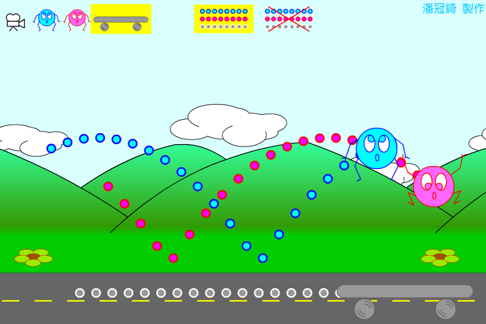

操作說明： 你可以用最上排的按鈕選擇攝影機固定在藍球、紅球或滑板。 也可以選擇是否顯示他們的軌跡。
觀賞重點： 你注意到了嗎？當攝影機固定在滑板上時，藍球、紅球的軌跡是 直線 或 拋物線？為什麼？ 把攝影機固定在藍球上時，紅球的軌跡是直線 或 拋物線？為什麼？
藍球、紅球在空中時受到重力加速度的作用，所以由滑板看他們的軌跡是拋物線。 但是藍球、紅球看著對方時，彼此之間還有加速度嗎？為什麼？

↑動畫截圖。
檔案下載
[PC exe]